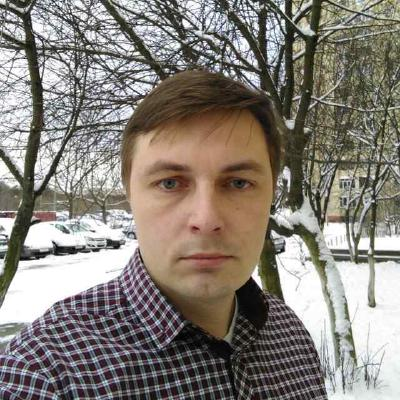

- Name: Aliaksei Babko (Алексей Бобко)
- Contacts: e-mail, github, skype: alexei.bobko
- Summary: I'm a middle-aged specialist in ecology who wants to change his work path
- Scills: Core JavaScript, D3.js, Express.js
- Code Examples:
Memory game
A puzzle
Leaflet map with SVG graphics
Markup Examples:
Racoon blog
Restaurant
- Experience: only educational projects
- Education.
First specialization. In 2001 graduated from the Belarussian State University, Geography Department. In 2012 graduated from the School of Public and Environmental Affairs, Indiana University, Bloomington, United States. Received a degree of the Master of Science in Environmental Science.
Cources in coding: Fundamentals of C programming, Belhard Center for Educational Technologies (08/2015 - 09/2015). edX UC3Mx: IT.1.1x Introduction to Programming with Java, Part 1 (08/2017 - 09/2017). Rolling Scopes School 2018Q1, JavaScript programming. (02/2018 - 05/2018). ServiceNow (01/2019 - 02/2019).
- English: Lived in the Unites States from August 2010 until May 2012